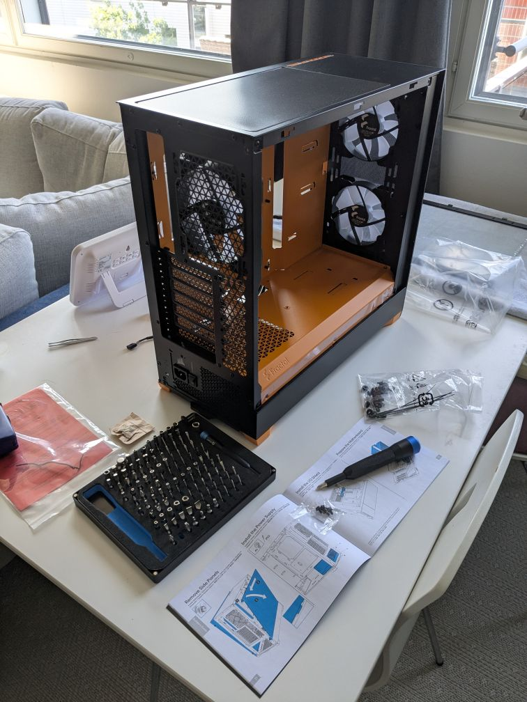
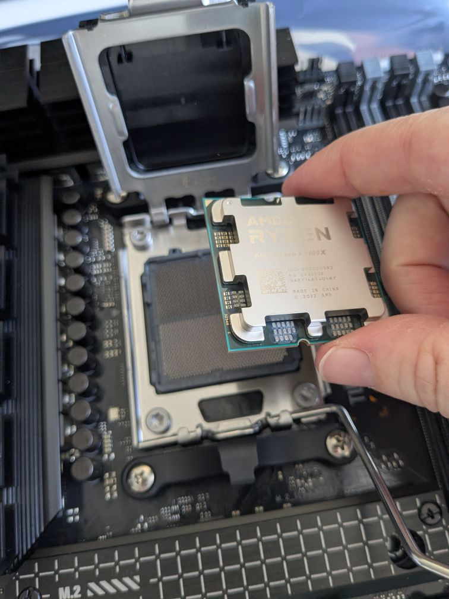
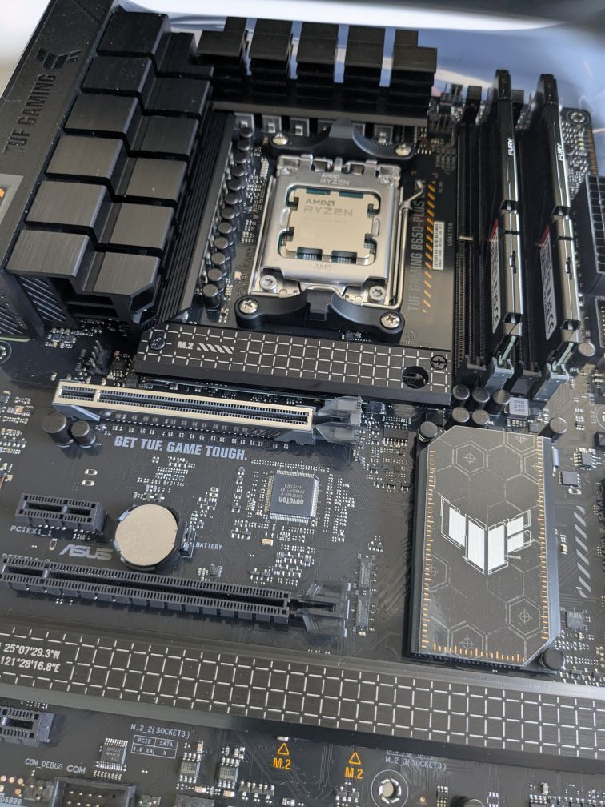
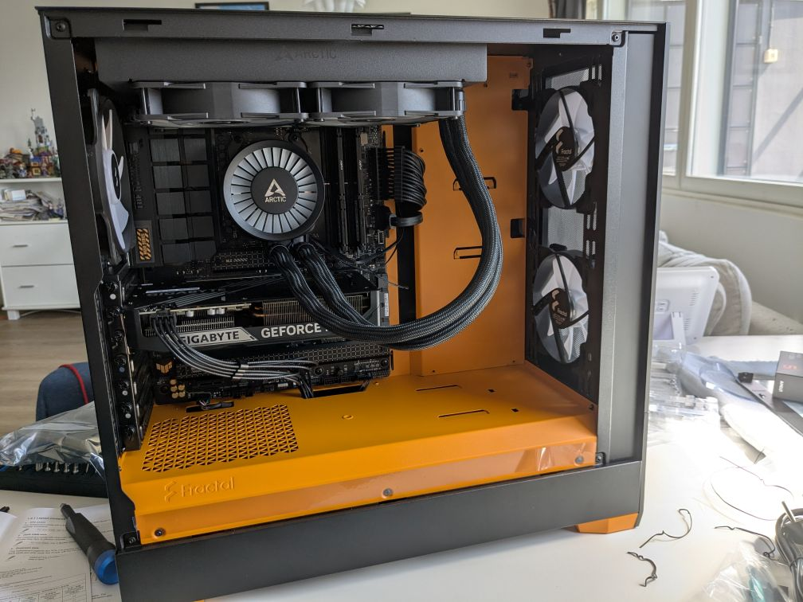
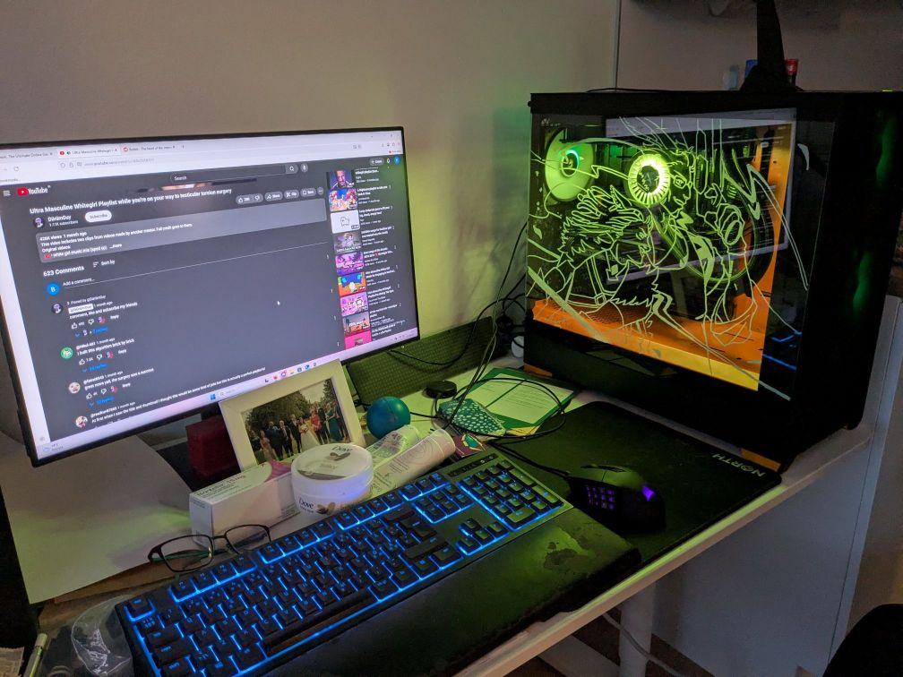

Welcome to the build!
26th June 2025
The last part to arrive was the case. I very nearly missed the delivery too - not because I wasn't home, but because the delivery guy couldn't get in. In short, our phone buzzer had been removed in favour of a door code, which was abused by a teen living in the building letting all his mates come in and litter all over the place so they disabled it. Unfortunately, as the code lock is still there, many delivery people get frustrated why we won't give them a code. Sorry, we have to let you in manually! I had to sprint down the stairs, threw the front door open, to see the delivery guy just about to get back into his van. Phew! barely! As for the kid, his mum apologised on our local facebook group with a selfie of herself and her son (looking sheepish), which was nice of her at least. Wish they'd do something about it so we can let people in though.
Anyway, as previously stated I got a Fractal Pop Air. The colour is a nice high-vis orange in person. The case is solid, with no loose joints or misshapen panels. One thing I was very pleasantly surprised about was how meticulous the instillation manual for the case was. Since this was my first build, I thought all cases must be this good, until a friend got a Phanteks XT and found the manual severely lacking. But yes! Fractal cases don't have the most efficient internal form factor but they're pretty good!
And with that, we begin! First I removed the mobo from the static protection bag and installed the CPU.
Then, I installed the M.2 SSD and RAM, making sure to remove the plastic film from the SSD. The mobo recommended placing the RAM into slots A2 and B2, so that's what I did.
With those installed, it was time to install the mobo into the case. With that done, I decided to install the AIO. Spoiler: this was a mistake! I had to remove the AIO to get to the connection points at the top of the mobo. Connect the wires first. I was just worried about scratching things up and wanted things locked in place asap. And yes, I remembered to take the plastic film off the AIO heatsink. To be fair, they had printed all across it in massive red letters to do so, so I think you need to be assembling this with your eyes closed to do otherwise. I also think I might have used slightly too much thermal paste, but since it's non-conductive a tiny bit of spill over shouldn't be an issue (except for future me).
I installed the GPU, most of the wiring, uninstalled the AIO fans from the case, finished wiring, then reinstalled the AIO fans. Nice.
Then, once the PSU was installed, I connected the tower to my monitor, plugged it in, and hit the power switch... and nothing.
Devestated. Well, perhaps that was hyperbole. I had looked a lot into PC building before getting started, so my first thought was I had messed up the power connection somehow. After all, it wasn't like the PC was spinning up then stopping. It was completely inert. And woops! I had connected POWER SW to the POWER LED header on the mobo. Once I connected it to the correct header, it worked! Wow, I hope all my problems could be solved this easily.
Anyway, with that, there was the final touch. I have talked before about the AeroCool Skribble, and while I knew I didn't want it due to the glass front panel, I knew I wanted to take inspiration from it. This is why I decided on the Fractal Pop Air over the Fractal North! Inspired heavily by the artist robobesito on Tumblr, I copied two of their pictures to create both my and my partner's Final Fantasy XIV characters and put them together rushing into battle. Why those two? Well, because we met in this game. When his group was requesting a fourth person to join for a run of the very first Deep Dungeon. If we never had met, I would still be working in a supermarket in the UK. So, here is the finished result! I love how the RGB fans interact with the chalk lines on the glass. Please don't mind the state of my keyboard, I am a newly graduated student after all!
This was loads of fun, and I have already promised to build my partner's next PC since this went so smoothly. This thing runs silently, which is a world of difference to my old jumbo jet of a PC. I set the RGB fans to alternate between reds, oranges and yellows, to fit with the case.
By the way, the dimensions of the transparent part of the glass panel for the Pop Air are 325mm by 455mm. Since I couldn't find that information online. If you want to do something similar yourself and need to print out a template to follow.